All structuresAlle bouwwerken
All buildings and places that generate in the world, from hamster houses to the Guh-Circuit.
Alle gebouwen en plekken die in de wereld verschijnen, van hamsterhuisjes tot het Guh-Circuit.
| NameNaam | KindSoort | Super compassSuperkompas | RarityZeldzaamheid | AboutOver | |
|---|---|---|---|---|---|
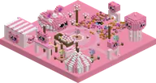 | Ballonfestival | CosyKnus | CosyKnus | uncommonongewoon | On the Guhvelden and the Roze pluisjes: balloons in four colours, a grandstand, a tent with a guh-faced...Kapitein Wolkje neemt je mee in zijn guh-luchtballon, langs de mooiste uitzichten |
 | Barbecueput | Barbecue | Barbecue | rarezeldzaam | A ruined-portal parody: broken barbecues with half a grillkool frame (holes and cracked stones), charred guh...Kapotte barbecues met een grillkoolframe. In de grote woont de Grillguh (ook in de Barbecuether zelf) |
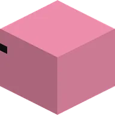 | Block guhBlokguh | DecorationDecoratie | commonvaak | A big pink wool guh cube.Een grote roze wollen guhkubus. | |
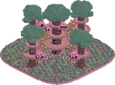 | Boomhutdorp | HomesWonen | HomesWonen | commonvaak | Only in the Vadswoud, about 1 per km (super compass: Wonen > Boomhutdorp).Guh-boomhutten hoog in de reuzenguhbomen van het Vadswoud, met de Boswachterguh en de Knabbelplukker |
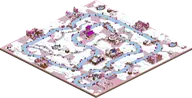 | De Elf-Guhjestocht | Minigames | Minigames | one per regioneen per gebied | The canal now winds like a real river (a smooth loop with meanders, 1278 blocks) and is 2 to 5 blocks wide...Een bevroren kanaal dat door de Guhpolder kronkelt, langs elf dorpjes, slootjes met knotwilgen en... |
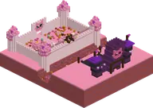 | De Knabbelkatapult | Minigames | Minigames | uncommonongewoon | The ledge sits in the land.Minigame: pluisballen op twaalf Mika-forten met Kapitein Floepguh, katapultsterren en een katapultpakje... |
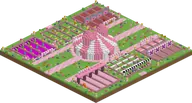 | De Knabbelspelen | Minigames | Minigames | rarezeldzaam | In the Guhweides and the Roze pluisjes: a big pink-and-white striped circus tent whose two tent tops are guh...Een grote circustent met zes speelvelden eromheen: de Grote Zeskamp (Guhweides, Roze pluisjes) |
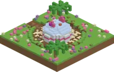 | De neergestorte capsule | StoriesVerhalen | StoriesVerhalen | one per regioneen per gebied | A skid trail, a crater and the round pod with a cracked glass dome and guh-ear fins.De capsule van 626-guh op de heuvel van Guhwai'i, met de vadsigheid-scanner |
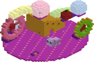 | Groot hamsterhuis | HomesWonen | HomesWonen | uncommonongewoon | Groot hamsterhuis is a structure in Guhs. Its in-game text (Dutch): Hamsterhuis met een grote guhHamsterhuis met een grote guh |
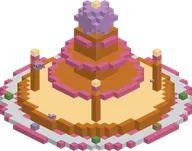 | Grote kaasfontein | DecorationDecoratie | rarezeldzaam | The big one: a vads orb on top, three cascading bowls, four spouting pillars in a deep kaas saus pool and a...Drie schalen kaassaus en een vadsbol | |
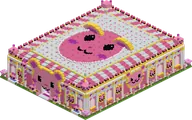 | Guh Beauty Theater | Minigames | Minigames | rarezeldzaam | Guh Beauty Theater is a structure in Guhs. Its in-game text (Dutch): Minigame: de Vads-wedstrijd van de...Minigame: de Vads-wedstrijd van de Showguh, showrozetten en het Showster-pakje |
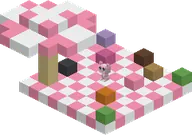 | Guh-picknick | Quests | Quests | uncommonongewoon | A checkered blanket with a parasol, cake, an empty frying pan (hint!) and the Hungry Guh with its quest.Quest: de verloren guhtaart; ook de Hongerige Guh (bankguh) |
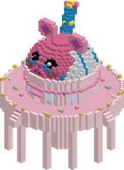 | Guh-Sterrenwacht | CosyKnus | CosyKnus | commonvaak | No 20-block pit around it any more.De sterrenwacht van Professor Sterretje, hoog op de bergen: verbind 's nachts de sterren tot... |
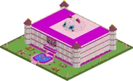 | Guhbibliotheek | WondersWonderen | WondersWonderen | legendarylegendarisch | The very rare guh library (Guhbibliotheek) in the Guhmension has three floors under a glass dome with guh...Zeer zeldzaam: 12 guhboeken om te lezen op lessenaars, de Bibliothecaris, een kwis en een geheime kamer |
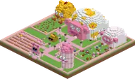 | Guhboerderij | CosyKnus | CosyKnus | uncommonongewoon | A farm in the guhweides and on the kaasvlakte (superkompas: Knus).De boerderij van Boerin Hooibaal: guhschaapjes, knabbelkippetjes, guhkoeien en een moestuin |
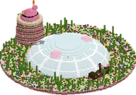 | Guhbubbel | WondersWonderen | WondersWonderen | one per areaeen per gebied | The Guhbubbel of 2.5 moved house: it no longer sits in a lagoon somewhere in the shallow Guhzee, but in the...In het midden van elke Diepe Guhzee: een glazen bubbel op de zeebodem, met de winkel van de Zeemeerguh,... |
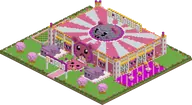 | Guhdisco | Minigames | Minigames | rarezeldzaam | Guhdisco is a structure in Guhs. Its in-game text (Dutch): Minigame: dans 'Simon zegt' op de beat van vier...Minigame: dans 'Simon zegt' op de beat van vier liedjes bij de DJ-guh, discomunten en een discopakje |
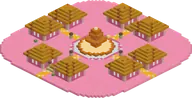 | Guhdorp | HomesWonen | HomesWonen | rarezeldzaam | In the flat and rolling Guhmension biomes you'll find guh villages: hamster houses with cheese roofs around a...Guhdorpelingen met guhberoepen: handelen! |
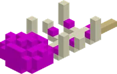 | Guh fossilGuhfossiel | DecorationDecoratie | commonvaak | The bones of a long-gone guh. Also in Mika's biome and the steep biomes.De botjes van een guh van lang geleden. Ook in Mika's bioom en de steile biomen. | |
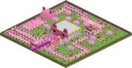 | Guhgolfbaan | Minigames | Minigames | rarezeldzaam | Guhgolfbaan is a structure in Guhs. Its in-game text (Dutch): Minigame: 9 holes minigolf met de Golfguh,...Minigame: 9 holes minigolf met de Golfguh, golfballetjes en een golfpakje |
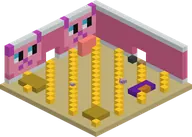 | Guhgrotten | AdventureAvontuur | AdventureAvontuur | very commonheel vaak | Underground networks of yellow hamster tubes around a big hamster room: bedding, hay, a guh wheel, wool guh...Hamsterbuizen diep onder de grond, met een grote centrale kamer |
 | Guhkasteel | WondersWonderen | WondersWonderen | legendarylegendarisch | The biggest thing in the mod: a legendary rare guh castle of 256×256 in the Guhmension, gothic with a guh...Legendarisch: de Koningguh, de poortwachters en een schatkamer (heel ver!) |
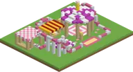 | Guhkermis | Minigames | Minigames | rarezeldzaam | Guhkermis is a structure in Guhs. Its in-game text (Dutch): Minigame: de achtbaan, kermisbonnen en het...Minigame: de achtbaan, kermisbonnen en het kermispakje |
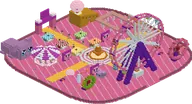 | Guhland | WondersWonderen | WondersWonderen | very rareheel zeldzaam | Guhland is a structure in Guhs. Its in-game text (Dutch): Het zeer zeldzame guh-pretpark met reuzenrad en...Het zeer zeldzame guh-pretpark met reuzenrad en sleebaan |
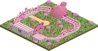 | Guhracebaan | Minigames | Minigames | rarezeldzaam | Guhracebaan is a structure in Guhs. Its in-game text (Dutch): Minigame: race op een huur-renguh, versla je...Minigame: race op een huur-renguh, versla je eigen geest en win het jockeypakje |
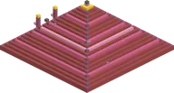 | Guhramide | WondersWonderen | WondersWonderen | very rareheel zeldzaam | A big stepped pink pyramid. Inside: a treasure hall with four chests and a Mummy Guh on a golden dais (mind...Zeldzame roze piramide met een Gouden Guh in een geheime kamer |
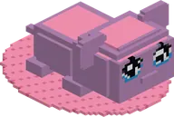 | Guhstandbeeld | DecorationDecoratie | rarezeldzaam | The guh model, built out of blocks (about 35 long and 24 high). That's it. Just admire it.Een reuzenguh van blokken | |
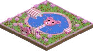 | Guhvisvijver | Minigames | Minigames | rarezeldzaam | Guhvisvijver is a structure in Guhs. Its in-game text (Dutch): Minigame: de Guhvis-wedstrijd bij de Visguh,...Minigame: de Guhvis-wedstrijd bij de Visguh, visbonnen en het vispakje |
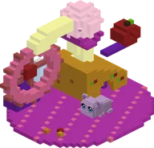 | Hamsterhuis | HomesWonen | HomesWonen | uncommonongewoon | A Littlest Pet Shop style playset: flower wheel, cheese wedge house with a guh spawner and a chest, twisty...Klein hamsterhuis met een guh-spawner |
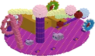 | Hamsterstad | HomesWonen | HomesWonen | uncommonongewoon | Hamsterstad is a structure in Guhs. Its in-game text (Dutch): Een hele hamsterspeelstad met een megaguhEen hele hamsterspeelstad met een megaguh |
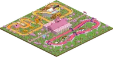 | Het Guh-Circuit | Minigames | Minigames | rarezeldzaam | A rare, huge race park (192 by 192 blocks) in the Guhvelden and on the Kaasvlakte, next to the old...Minigame: drie racebanen (Regenboogbaan, Vadsbaan, Kaasbergbaan) met Coach Vahoegvroem - makkelijk, medium of... |
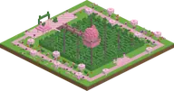 | Het Guhdoolhof | Minigames | Minigames | rarezeldzaam | In the Guhvelden: a big square hedge field with guh-ear topiary and trimmed guh faces all around, an exit...Een reusachtig heggendoolhof met een uitkijkguh in het midden (Guhvelden) |
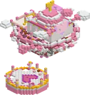 | Het Hemelkapelletje | StoriesVerhalen | StoriesVerhalen | very rareheel zeldzaam | Somewhere above the guh land (a bit rarer than the other buildings) you find a round cloud plaza with a big...Een klein wolkentempeltje op een zwevend eilandje, met het Knuffelhart |
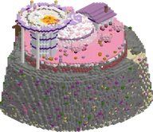 | Het kloon-eiland | StoriesVerhalen | StoriesVerhalen | one per regioneen per gebied | Far out in the Guhzee a rock island rises from the sea floor, with pink coral, two sandy coves and a grassy...Een rotseiland in de Diepe Guhzee, met een lab onder een glazen koepel en een arena bovenop |
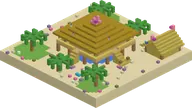 | Het paalhuisje van Lilo en Nani | StoriesVerhalen | StoriesVerhalen | one per regioneen per gebied | On palm-log stilts over a lagoon pond, with a thatched roof with two pink guh ears, and the guh-asiel Pootje...Het paalhuisje van Lilo-guh en Nani-guh op het strand van Guhwai'i, met het guh-asiel |
 | Het Sjoelhuisje | Minigames | Minigames | uncommonongewoon | The grass runs right up to the floor.Minigame: guh-sjoelen bij Opoe Njegschuif, sjoelschijfjes en een gebreid sjoelpakje (Guhweides) |
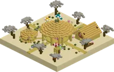 | Het surfstrand van Guhwai'i | Minigames | Minigames | one per regioneen per gebied | On the other beach of the island: a round plaza with a hula podium under a big thatched hale, a flower arch,...Minigames: surfen en hula met Lilo-guh, schelpjesmunten en Tikiguh's Tiki-kraampje (Guhwai'i) |
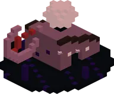 | Huis van Boze Mika | AdventureAvontuur | AdventureAvontuur | commonvaak | The dark version: black and crying obsidian, a broken wheel, Mikas inside and a chest with Mika's vet.Het donkere huis van de Mika's, met Mika's vet in de kist |
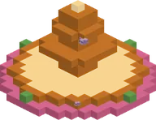 | Kaasfontein | DecorationDecoratie | uncommonongewoon | A spout on top of a Block of Kaasknabbels column: the kaas saus really flows, spilling over two bowls into...Een fontein van kaassaus | |
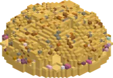 | Kaasknabbel-nest | AdventureAvontuur | AdventureAvontuur | rarezeldzaam | A rare kaaskorst hill (37 × 37 blocks) full of swiss-cheese holes, with guh faces peeking out on every side,...Een kaaskorstheuvel vol gaten... en boze kaasknabbels. Stap op de gouden kern als je durft! |
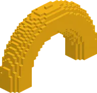 | Kaasknabbel archKaasknabbelboog | DecorationDecoratie | uncommonongewoon | A curled kaasknabbel so big you can walk under it.Een gekrulde kaasknabbel zo groot dat je eronder door kunt lopen. | |
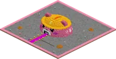 | Kaasmijn | AdventureAvontuur | AdventureAvontuur | legendarylegendarisch | Deep in the Guhmension, very rarely, a giant guh head in a yellow hard hat sticks out of the ground: the...Heel zeldzaam: een guhhoofd met een bouwhelm en een diepe kaasmijn eronder |
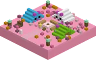 | Kampeerplekje | CosyKnus | CosyKnus | commonvaak | Little camp sites with tents and a campfire, in the Knuffeldal and the guhweides.Een kampvuur met guhtentjes: 's nachts vertelt Opa Guh er een verhaal |
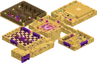 | Knabbelkelder | EndEinde | EndEinde | 4 per world4 per wereld | A cellar of cheese-crust bricks under the Guhmension, partly gnawed away by the Mikas.Ondergronds: cellen met magere guhs, Mika-larfjes en het portaal naar het Guheinde |
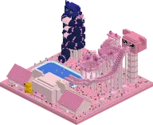 | Knuffelbad | Minigames | Minigames | commonvaak | A normal duck, the guheendje, the badmeester-eendje, the duikeendje, the maaneendje and the rare golden one.Het zwembad aan de guhzee: een guhkop vol badschuim, wastobben en drie grote glijbanen |
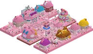 | Knuffeldal | Minigames | Minigames | one per areaeen per gebied | The Knuffeldal (guhs:knuffeldal) is a small but findable biome in the Guhmension (about 3% of it, never next...Het knusse stadje in het midden van het Knuffeldal: Burgemeester Vadsema, het Grote Knusfeest, Cocotje... |
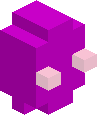 | Quartz statueKwartsbeeldje | DecorationDecoratie | commonvaak | A small white quartz statue.Een klein wit kwartsbeeldje. | |
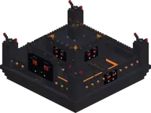 | Mika-grillpaleis | Barbecue | Barbecue | commonvaak | The bastion of the Mikas (73×52×73): roosterijzer on a foundation rising out of the sauce sea, with a moat of...Het paleis van de Nether-Mika's: een berg gestolen kaasknabbels en vads-schatkisten (Barbecuether) |
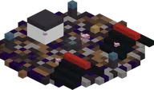 | Mika-kamp | Quests | Quests | uncommonongewoon | Black tents, soul lanterns, a soul campfire, Mikas — and a caged baby guh.Quest: bevrijd Guhbert met steen-papier-schaar-VADS |
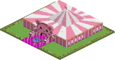 | Mika-mephal | Minigames | Minigames | rarezeldzaam | Mika-mephal is a structure in Guhs. Its in-game text (Dutch): Minigame: Mika meppen bij de Mepguh, mepmunten...Minigame: Mika meppen bij de Mepguh, mepmunten en het Mika-jagerpakje |
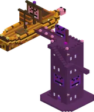 | Mika-vesting | DecorationDecoratie | commonvaak | On the outer islands stand Mika-vestingen: towers of purple Mika stone with Mikas, loot and a little Mika...Op de buiteneilanden staan Mika-vestingen: torens van paarse Mika-steen met Mika's, buit en een... | |
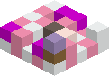 | Mini picnicMinipicknick | DecorationDecoratie | commonvaak | A little checkered blanket with cake, a lantern and flowers.Een klein geblokt kleedje met taart, een lantaarn en bloemen. | |
 | Nomguh | Minigames | Minigames | one per regioneen per gebied | In the middle of every tundra lies Nomguh, a snowy guh town (a wink at Nome): a round square with a big...Het besneeuwde guhstadje midden in de Sneeuwguhtoendra: Baltoguh, Boris, Rosy en de tocht door de storm |
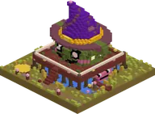 | Paalhut van de Moerasheks | AdventureAvontuur | AdventureAvontuur | commonvaak | Only in the Kaasmoeras (super compass: Avontuur). A big platform on mangrove stilts above a pond, and the hut...In het Kaasmoeras: een hut op palen, met de Moerasheks-Mika erin (en haar moeraskaas) |
| Giant kaasknabbelReuzenkaasknabbel | DecorationDecoratie | uncommonongewoon | A giant kaasknabbel with crumbs around it, and a sign: "Ik had zn honger - Guh".Een reuzenkaasknabbel met kruimels eromheen, en een bordje: "Ik had zn honger - Guh". | ||
| Giant cakeReuzentaart | DecorationDecoratie | uncommonongewoon | A cake as big as a house, with frosting and strawberries.Een taart zo groot als een huis, met glazuur en aardbeien. | ||
| Sleehut | Quests | Quests | uncommonongewoon | A snowy log cabin with a campfire and a chest. The Sled Guh sits outside next to her broken sled.Quest: de kapotte slee van de Slee-guh (Guhpieken) | |
| Spiesburcht | Barbecue | Barbecue | commonvaak | The fortress of the Barbecuether (121×66×121): a castle of houtskoolsteen stones on the height where the cave...Een burcht van houtskoolsteen met lange bruggen, Vonk-Mika's en een pindasaus-tuintje (Barbecuether) | |
| Stille Voorraadkelder | UndergroundOndergrond | UndergroundOndergrond | uncommonongewoon | The Mikas' secret pantry (an Ancient City parody, 96×30×96, rare, only in the Gatenkaasgrotten).Diep in de Gatenkaasgrotten: de geheime voorraadkelder van de Mika's. SSST, niet knabbelen! | |
| Terugpoort | EndEinde | EndEinde | uncommonongewoon | All over the outer islands of the Guheinde (every few hundred blocks) stands a Terugpoort: a little lit...Een klein Knabbelpoort-altaartje op de buiteneilanden: stap erin en je zweeft vahoeg terug naar het grote... | |
| Uitdagende guhgrotten | AdventureAvontuur | AdventureAvontuur | commonvaak | The hostile version of the guh caves: black and red glass tubes leading to a dark hall with Mika spawners, a...Zwart-rode buizen, Mika-spawners en Grote Mika met twee schatkisten | |
| Vadsig eetfestijn | Minigames | Minigames | rarezeldzaam | Vadsig eetfestijn is a structure in Guhs. Its in-game text (Dutch): Minigame: vang vallend eten bij de...Minigame: vang vallend eten bij de Smulguh, smulmunten en het smulpakje | |
| Vadsig-heiligdom | Quests | Quests | very rareheel zeldzaam | A round pink temple on quartz pillars under a glass dome. Mother Vadsig sits on her huge cushion in the...Hier begint de quest van Moeder Vadsig (je eigen guhmaag) | |
| Verlaten kaasmijnschacht | UndergroundOndergrond | UndergroundOndergrond | very commonheel vaak | Small and fairly common in the Gatenkaasgrotten: two crossing corridors with old planks, props (some caved...Een oude mijnschacht in de Gatenkaasgrotten, met een karretje vol buit | |
| Verstopguhhuis | Minigames | Minigames | rarezeldzaam | Somewhere in the Guhmension stands the rare verstopguh house: a giant dollhouse of 80×80 with two floors full...Minigame: verstopguh met Verstopguhtje, tickets en een detectivepakje | |
| Zwevende guh-eilandjes | WondersWonderen | WondersWonderen | legendarylegendarisch | High in the Guhmension sky float the floating guh islands (very rare).Heel zeldzaam: eilandjes in de lucht, een wolkenlift en de unieke Wolkguh |